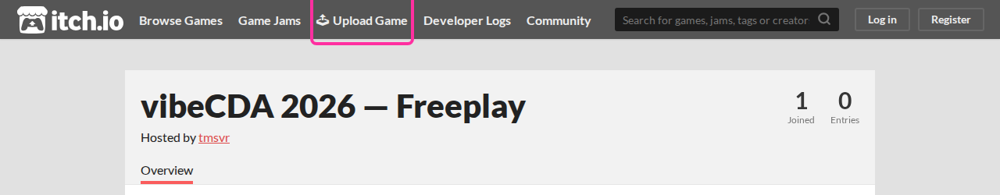
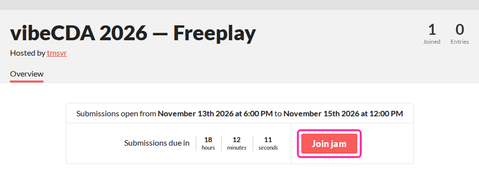

Submit your game on itch.io
Five steps from finished game to jam entry. Allow 15 minutes, and don't leave it for the last minute.
1. Build your game ZIP
In the terminal of your project (Codespace or laptop), run:
npm run packageWhen it finishes you'll have artifacts/game.zip. In Codespaces, right-click artifacts → game.zip → Download. Don't unzip it. Upload this file, not the GitHub "Download ZIP" of your source code.
Not using the starter? Any browser game works if index.html is at the top level of the ZIP. Native games (Godot, Unity, etc.) can upload Windows/Mac/Linux builds instead.
2. Create an itch.io project
Log in to itch.io (or register), then click Upload Game in the top bar. Your dashboard's Create new project button does the same thing.

On the form, fill in:
- Title: your game's name.
- Kind of project: HTML. This setting is what makes the game playable in the browser.
- Uploads: click Upload files, pick
game.zip, then tick This file will be played in the browser. - Embed options: set the size to 960 × 720 and turn on the fullscreen button.
- Details: a one-line pitch, the controls, team members, credits for any assets you didn't make, and how you used AI.
- Cover image: add one, plus a screenshot or two. A screenshot of your game is fine.
Click Save & view page.
3. Test it and make it public
- On your game page, click Run game and actually play it. Click inside the game once so it gets keyboard input and sound.
- Back in Edit game, set Visibility & access to Public and save.
- Open the game's link in a private/incognito window to see it the way judges will.
Blank screen or only a download link? Check that Kind of project is HTML, the "played in the browser" box is ticked, and you uploaded artifacts/game.zip, not your source code.
4. Enter the jam (a separate step!)
Uploading a game does not enter it in the jam. Open your track's jam page:
Click Join jam. Once you've joined, the button changes to Submit your project. Click it, pick the game you just created, answer the questions, and submit.

Only one teammate needs to submit. List the whole team in the game's description. GTA Cda is a community build and isn't submitted through itch.io.
5. Double-check
- Your game appears in the jam's Submissions tab, and the entry count went up.
- It plays in a signed-out browser window.
- Controls, credits, and AI use are listed on the page.
- Your final code is committed and pushed to GitHub.
Stuck? Ask a mentor in the room, or post in community help. For even more detail, see the full beginner walkthrough.